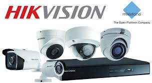

| Home About | |
DahuaDahua is committed to providing its highest quality solutions and products with the latest technologies to enable end users to perform their business successfully. In 2001, Dahua became the first company in China to launch an 8-channel real-time embedded digital video recorder. Since then, the company has continued to invest in building strong R&D capabilities for new technology and innovation. |
|
|  |
HikiVisionHikvision provides video surveillance products and vertical market solutions in the global market, through more than 2,400 partners in 155 countries and regions. In mainland China, Hikvision now partners with more than 40,000 distributors, system integrators and installers. The Company’s products and solutions have been widely deployed in a number of vertical markets and in notable facilities around the world including the Beijing Olympic Stadium, Shanghai Expo, Philadelphia Safe Communities in the U.S., South Korea Seoul Safe City, Brazil World Cup Stadium, the Italy Linate Airport, and many others. |